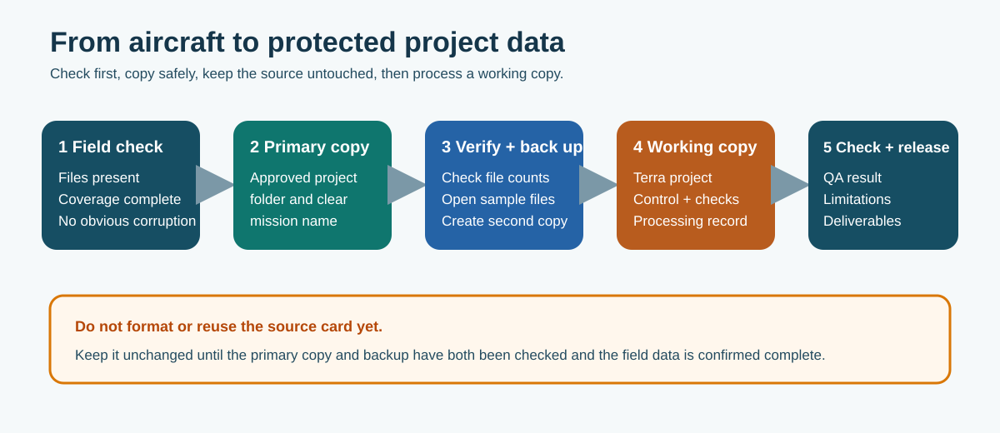

7. Post-flight data management
7.1 Check before packing up
Do not leave simply because the aircraft landed successfully.
- confirm the planned area was covered and the mission completed;
- check the image count or LiDAR mission folders is reasonable;
- open sample photographs and check focus, exposure, blur and target visibility;
- confirm RTK/positioning and trajectory indicators are consistent with the flight record;
- confirm the surveyed control/checkpoint file is available or know who will supply it;
- note paused lines, battery changes, warnings, unexpected landings or missing areas; and
- complete a safe re-flight while the site is still controlled when a clear gap can be corrected;
- complete the site sign-out and tell the site manager/project contact that flying is finished and whether field coverage passed;
- remove or close any temporary exclusion/control arrangement; and
- confirm no equipment, batteries, markers or waste have been left behind.
The field check does not prove accuracy. It confirms the expected data appears to be present and usable enough to process.
Arrival and departure notification are both a health-and-safety control and professional courtesy. Site personnel need to know when the drone operation and its temporary controls have ended.
| Matrice 4E photogrammetry | M350 RTK + Zenmuse L2 |
|---|---|
| Original images with metadata unchanged | Complete L2 mission folder and original file structure |
| Flight/controller record and mission settings | Flight record, trajectory/positioning data and payload settings |
| Mission boundary and interruption notes | Mission lines, calibration segments and warnings |
| GCP/checkpoint file and target photographs | Control/checkpoint file and target photographs |
7.2 Protect and organise the source
Use the memory card as the transfer source — not as the only copy and not as the working drive.

Figure 16. Check the data, create a primary project copy and a backup, then process a separate working copy.
- Copy the complete mission folder to the approved BOPRC project location.
- Compare the card and copy: folder names, file count and total size; then open sample files.
- Create a second verified copy in the approved backup location.
- Record who copied the data, the date, aircraft/mission and any known issue.
- Keep the source card unchanged until both copies are checked and the dataset is complete.
- Process from a working copy, not the card or the only retained original.
If files are missing or the card reports an error, stop. Do not format it or run recovery software without involving the technical lead.
Proposed BOPRC survey package — confirm the authoritative storage location and retention rules before issue:
SurveyID_YYYY-MM-DD_Site
├── 01_Raw_Flight
├── 02_Control_and_Checkpoints
├── 03_Terra_Project
├── 04_Final_Outputs
└── 05_QA_and_Metadata
├── SurveyID_Terra_Quality_Report.pdf
├── SurveyID_Checkpoint_Residuals.csv
├── SurveyID_Final_Surface_Check.csv
└── SurveyID_QA_Metadata.pdf
Keep the raw files untouched. Put only checked, released products in 04_Final_Outputs. The Terra PDF remains a normal preserved file beside the .gdb and output files—not only inside a processing computer or geodatabase. Use the same stable Survey ID in filenames and ArcGIS metadata. Prefer a relative package path or managed document reference over a drive-letter path that may break when data moves.
7.3 Coordinate and height record
For normal BOPRC engineering work, use NZTM2000 / NZGD2000 (EPSG:2193) and NZVD2016 (EPSG:7839) unless the project specifies and records another system.
Before processing, confirm:
- horizontal coordinate system and units;
- vertical datum or height system and units;
- whether heights are NZVD2016 orthometric or GNSS ellipsoidal;
- the geoid/transformation used; and
- the order of Easting, Northing and Height fields.
If the coordinate or height setup cannot be understood and independently checked, stop and ask the survey/technical lead.
7.4 Media outputs and DroneDeploy
After the source copy is verified, route each product to the appropriate workflow.

Figure 17. Survey data, Photospheres and record media follow different processing paths but remain connected by one Survey/Event ID.
| Output | Archive master | Working or published copy |
|---|---|---|
| Video | Untouched video and associated telemetry/subtitle file where produced. | Named derivative for meetings, communications or the future Flood Media Viewer. Never edit over the master. |
| Oblique photographs | Original files with EXIF/location metadata and enough sequence context to understand the view. | Approved smaller copy or viewer item, with event/site, time and direction recorded. |
| Photosphere | Original source images and DJI stitched panorama. | Checked DroneDeploy panorama and durable project reference where that platform remains approved. |
For DroneDeploy, use the correct project and capture date, upload the panorama through the current media upload workflow, check the stitch and mapped location, name it with the Event/Survey ID, and record the hosted reference. Confirm access/privacy settings. DroneDeploy storage or a public share link does not replace BOPRC-managed retention.
Flood photographs, oblique views, video and Photospheres are intended to feed the planned Flood Media Viewer. Until that workflow is operational and approved, record the archive location and do not imply that viewer publication has occurred.